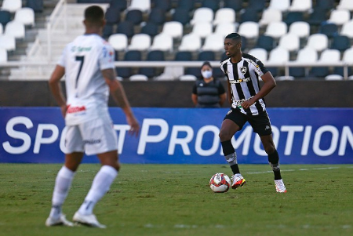
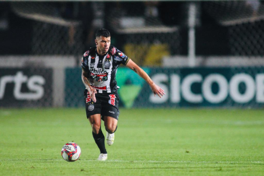
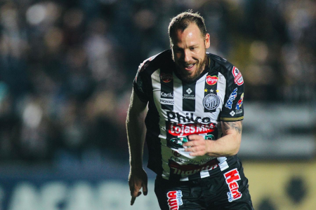

Confira as notícias
Operário joga no Rio e leva virada do Botafogo
Apesar com o primeiro gol de Fabiano da Silva, Operário sofre virada para o Botafogo
Pré-Jogo, Operário enfrentará Botafogo no Rio
No Rio de Janeiro, o Operário Ferroviário enfrenta o Botafogo-RJ, na tarde desta segunda-feira (15), às 16, no Estádio Nilton Santos, em duelo válido pela 36ª rodada do Campeonato Brasileiro da Série B.
Operário vence o Remo em casa
Com gols de Felipe Garcia e Thiago Schumacher, na noite de terça-feira (09), o Operário Ferroviário venceu o Remo-PA por 2 a 1, no Estádio Germano Krüger, em duelo válido pela 35ª rodada do Campeonato Brasileiro da Série B 2021.